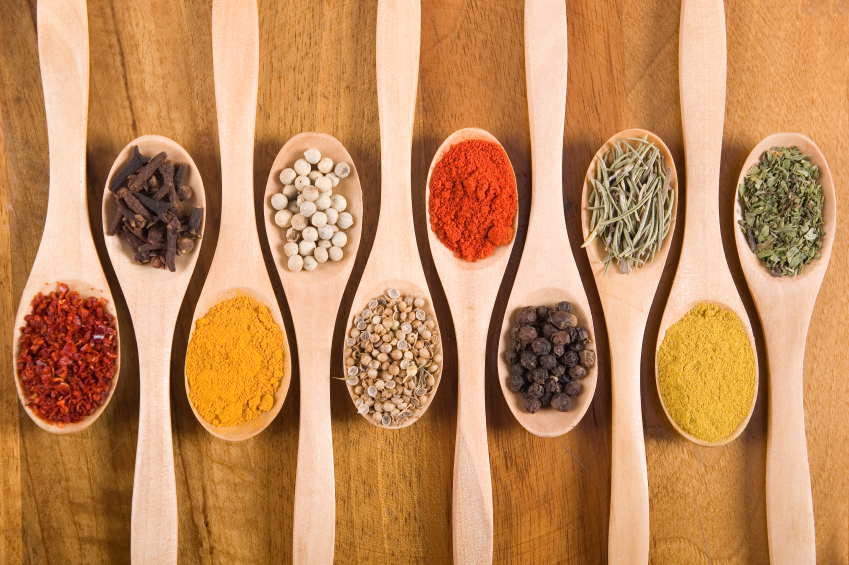

How to reduce your salt intake
If you are convinced that you should lower your salt intake, then the next step is to think about the different ways that you can do this. The OxSalt website provides tips and advice about how to do this and is worth looking around the site to see which of the suggestions you find helpful. A good place to start is the guide to reducing salt in your diet you can read or download it here
Try using herbs spices or ingredients such as lemon, ginger, garlic or chilli to enhance the flavour of your food instead of salt. |
 |
Seasoning recipes
Instead of salt why not try some of the following seasoning suggestions when you're next cooking. Combine all the ingredients in a small bowl and blend or mix them well spoon them into a shaker such as a salt shaker store them in a cool dark place.
Spicy blend
¼ teaspoon freshly ground white pepper
1 tablespoon dry mustard
¼ teaspoon ground cumin
1 teaspoon onion powder
½ teaspoon garlic powder
¼ teaspoon curry powder
Salt-less surprise
2 teaspoons garlic powder
1 teaspoon dried basil
1 teaspoon oregano
Spicy seasoning
1 teaspoon cloves
1 teaspoon peppercorns
1 teaspoon paprika
1 teasppon coriander seed (crushed)
1 tablespoon rosemary
Herb seasoning
1 tablespoons dried dill or basil
1 teaspoon celery seed
2 tablespoons onion powder
¼ teaspoon (a pinch) dried oregano
¼ teaspoon (a pinch) ground black pepper
Dining out tips
If you eat out, you may want to consider the following points:
Appetizers
Select fresh fruit or vegetables
Avoid soups and broths
Choose salads and order salad dressings on the side and use small amounts of them
Avoid processed or cured meats, seasoned croutons, cheeses, salted nuts
Main courses
Select meat, poultry, fish or shellfish choices that includes the words boiled, grilled, broiled or roasted
Ask for gravy / sauces to be served separately and use in small amounts
Select plain vegetables, potatoes and noodles
Ask if food can be cooked without adding salt
Avoid restaurants that do not allow for special food preparation (such as buffet style restaurants or fast food chains)
Avoid salted condiments and garnishes such as olives
Helpful resource
The OxSalt care bundle includes a range of useful resources that you can read and print out if you wish.
The OxSalt booklet
The OxSalt Lowering Salt for Health Booklet gives you an overview of why and how you can lower your salt intake.
Quick Reference Shopping Guide
Why not try our Handy shopping guide to find lower salt alternatives to salty food.
Salt content portion table
If you know the amount of salt in 100 grams of a food and you have a rough idea of the size of the portions you are eating, then this handy Table of Salt Content per portion tells you how much salt is in that portion.
Detailed guide to the salt content of foods
This is a more complete List of foods and their salt content.
Food diary
Food diaries can be very useful if you want to check how much salt you are eating. You can download a printable food diary sheet.
OxSalt presentation
This is a presentation that you can review in your own time. You can also download a Powerpoint version with a soundtrack.
Websites: https://www.nhs.uk/live-well/eat-well/food-types/salt-in-your-diet/